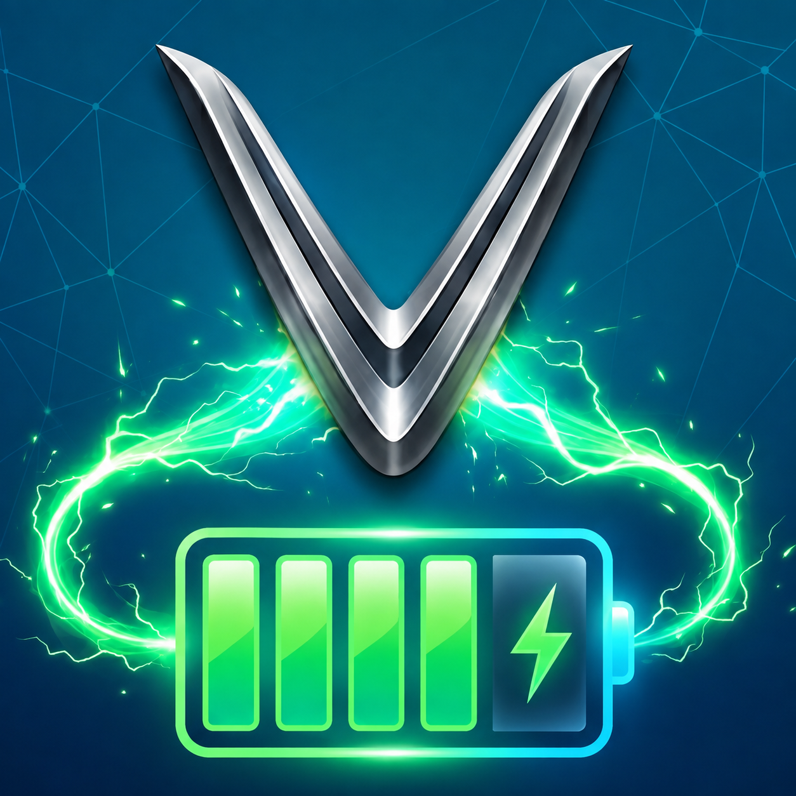
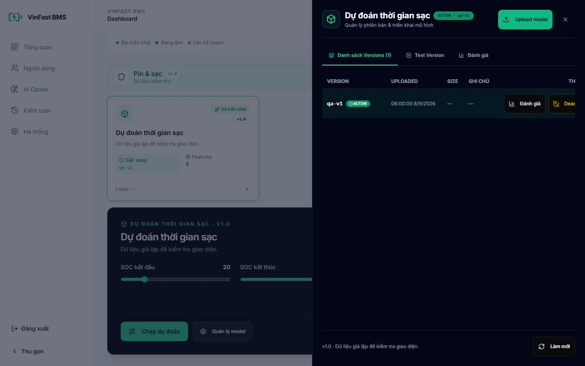
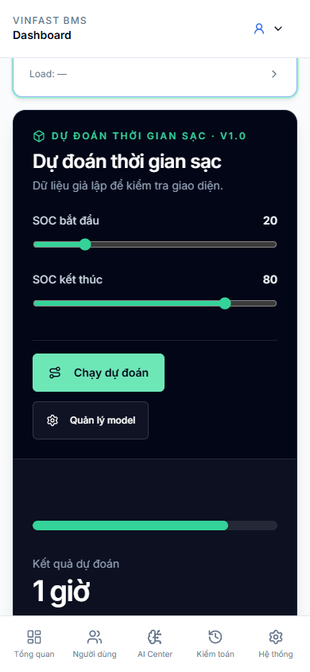
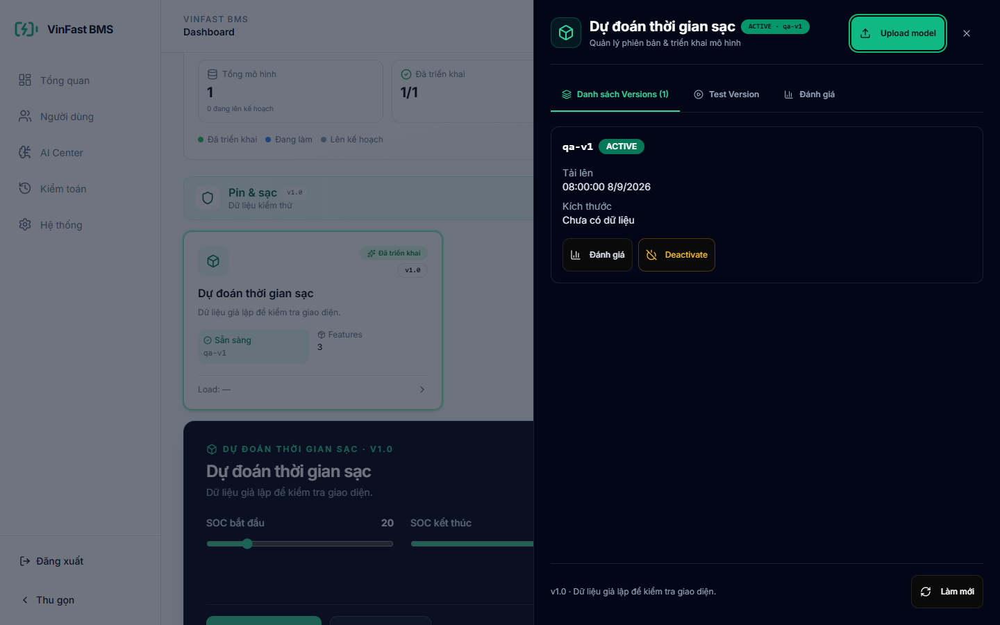

Understand
SoC, SoH, range and energy history in one readable view.

VINFAST BATTERYProduct case study · 2026
An AI-assisted mobile and IoT platform that turns battery telemetry into clear decisions for VinFast electric motorcycle riders.

System visibility from telemetry to model lifecycle
Electric motorcycle riders often know the current percentage, but not the battery’s health, the true time remaining to charge, or whether an overnight session is behaving normally.
VinFast Battery connects those missing signals. It combines vehicle profiles, live power telemetry and personalized predictions into one experience—from daily rides to automatic charge cutoff.
SoC, SoH, range and energy history in one readable view.
Charging time and battery behavior adapted to each vehicle.
Remote relay control with target-based cutoff and safety rules.
One operational view across vehicles, users and models
Operations dashboard
System health, active vehicles, average battery condition and recent alerts stay visible without forcing operators through disconnected tools.

The platform blends physical battery constraints with machine-learning estimates. When network intelligence is unavailable, the experience can fall back to local inference or deterministic calculations.
Built to evaluate before deployment

Each layer has a focused job, so mobile experience, prediction services and physical charging control can evolve independently.
Safety by design
Target cutoff, abnormal-condition monitoring and session recovery are designed as explicit control layers around the physical charging process.